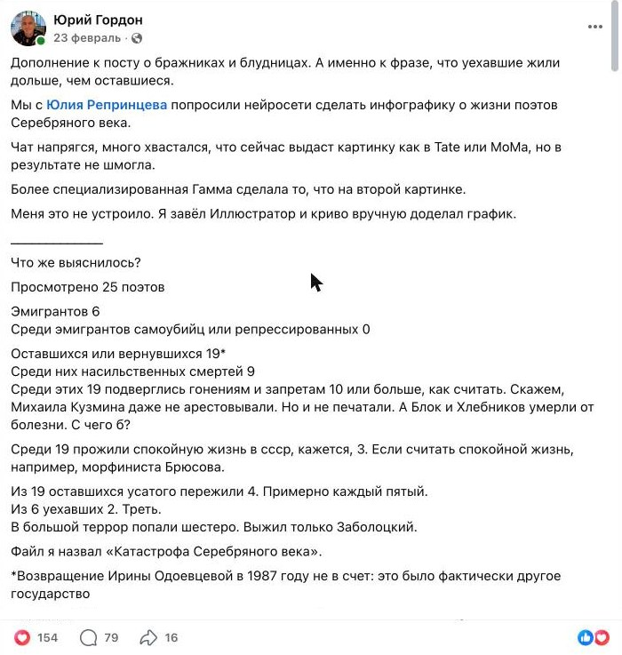
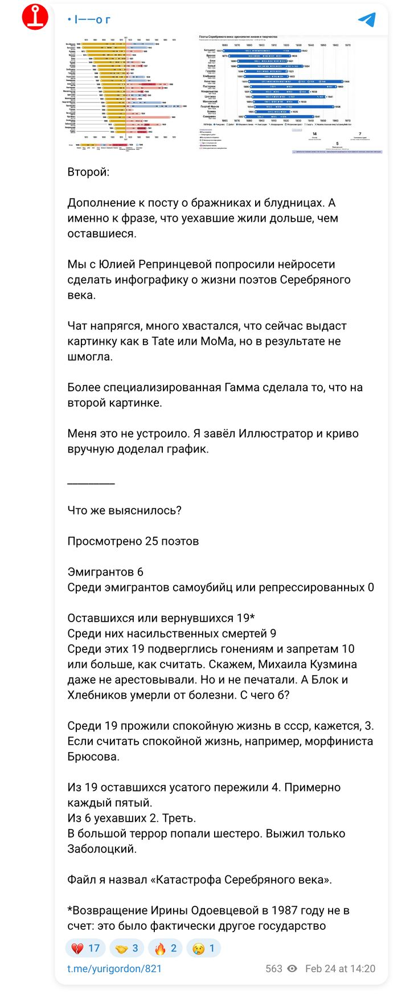

Карты и инфографика · февраль 2026 · исследование 13
Таймлайн жизни 25 поэтов начала XX века: рождение, первая публикация, книги, эмиграция и возвращение, аресты и репрессии, смерть — именами в столбец, датами слева направо.
Сбор и сверка дат 25 поэтов по источникам, первые версии графика в ChatGPT и Gamma. Интерактивная шкала на этой странице сделана с Claude. Выяснилось: из 19 оставшихся или вернувшихся насильственно погибли 9; из 6 эмигрантов — никто.
ChatGPT, Gamma, Claude
Ниже — интерактивная шкала 25 поэтов, а также публикации по ходу работы.
Инфографика · сделана для этого сайта
Зачем эта шкала. В феврале 2026 года Юрий Гордон попросил меня сделать инфографику о поэтах Серебряного века и заметил: те, кто уехал, прожили дольше тех, кто остался. Чтобы проверить эту мысль, я собрала даты жизни 25 поэтов — рождение, дебют, главные сборники, эмиграцию, аресты, смерть — и сверила их по источникам. Здесь те же данные в интерактивном виде: можно навести на любую строку и отфильтровать поэтов по судьбе. Этой интерактивной версии больше нигде нет: я собрала её для портфолио.
Данные — моё исследование: даты собраны и сверены в феврале 2026 года. Инфографика автора по этим данным — в его посте ↗
Публикации
Посты Юрия Гордона об этой работе. У каждого — ссылка на оригинал.

